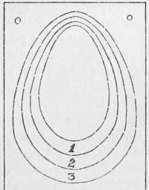
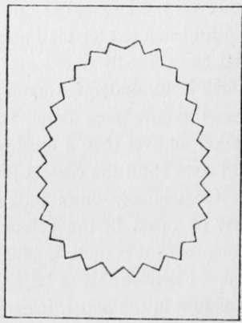

Varieties Of P.O.P
Description
This section is from the book "The Barnet Book Of Photography", by Herts Barnet. Also available from Amazon: The Barnet Book Of Photography.
Varieties Of P.O.P
Having cleared up some of these points, we will now commence again at the beginning and see how P.O.P. should be worked in order to produce pleasing and lasting results. First of all, the choice of a paper. The manufacture of P.O.P. has nowadays been reduced to a fine art, and Barnet papers give us a good selection to choose from—thick anjja thin, glossy and matt, tinted and white. The thick paper, which is really cardboard stiff enough in small sizes for all ordinary purposes without mounting, may be utilised in a variety of ways. It is sent out cut to the regulation size, with orthodox lettering on the reverse side for post-card purposes; also in ordinary photographic sizes, from which by suitably masking portions of the card, very pretty Christmas and Greeting Cards can be made up. Many other means of utilising this sensitised card will suggest themselves to the inventive mind; for example, Menu Cards, " At Home " Invitations, Wedding Cards, commercial name and address cards, etc. The treatment in no way differs from that necessary for ordinary P.O.P. The matt paper will naturally appeal to the more artistic workers, and by the use of various toning baths a large variety of colours—brown, red, and purple—may be obtained. But, after all, it is the glossy paper that is more generally used. This is what most folks mean when they say " P.O.P.," and it cannot be gainsaid that for small work and any subject that requires the fullest detail present in the negative to be shown in the print there is no method that will give finer results. For tint of paper I have a decided bias in favour of the mauve, because white paper is apt to turn a bit yellow with age, whereas the mauve tint seems to fade to a white. For the pink I cannot say a good word at all, but it is a question of taste, and the tint is there to hand if desired.
For small sizes—c.D.v. J plate, 5x4, and \ plate or cabinet—the paper is best purchased in packets of cut sizes. For larger sizes, or for workers who make all sorts of sizes the sheets are best. When cutting up sheets of P.O.P. (they always have a strong curl and need a good grip), it is certainly advisable to wear a pair of white cotton gloves, also to remember that metal is not a good thing for sensitive paper. Therefore, the sheets should be doubled to the ...sizes wanted and a bone paper-knife used for actually ~utt mg up.
Printing
All is now ready for the actual printing. Is it necessary to say how that is done ? The paper and negative are brought into contact in the usual printing frame, and then exposed to light until the desired depth is reached. This can be judged by occasionally opening the frame and looking at the progress of printing; but it must be borne in mind that if too frequent, or if made in a bright light, these glimpses will result in a degradation of the whites of the photograph. Direct sunlight should never be used for P.O.P. printing : at least, " hardly ever." An exceedingly dense negative may demand it sometimes, but it should be avoided if possible. Use the best shade light obtainable, or, failing that, sunlight may be resorted to by pasting tissue-paper over the front of the frame to diffuse the light. The electric arc can also be used in this way, and will be found quicker than winter daylight.
A little thought and coddling should be devoted to abnormally thin negatives. If printed carefully in a quiet light and lightly toned to a chestnut-brown colour comparatively good results may be got from a negative that will only yield flat slatey-coloured prints when printed in a strong light and toned to the purple stage. Good purples and purple-blacks can only be obtained from negatives which have a good range of contrast: that is to say, negatives which have been well exposed and development carried rather far.
The depth of printing must be regulated by the bath in which the prints are intended to be toned. Sulphocyanide and tungstate baths cause least loss of depth during toning, whilst phosphate and bicarbonate baths cause the greatest amount of reduction, with the exception of platinum baths, which need still deeper printing. These differences are, however, not so great as one would suppose, because whilst a print intended for platinum toning should be fairly strong and be decidedly tinted over in the high lights, even a print which is to undergo treatment in the sulphocyanide bath needs to have some detail showing in the lights, and to be darker all over than a finished print should be. Experience will soon show the correct printing depth.
Occasionally one's judgment of the depth of printing may be upset by the colour of the image during printing. Sometimes it is quite a blue colour, at other times a bright red. I believe this to be accounted for by the presence of moisture in the paper, because a freshly-opened packet will print blue, whilst one that has been opened and left for any length of time in a damp atmosphere gives the red-coloured prints. I find that a blue print loses more in the subsequent toning and fixing than a red one does. Consequently a blue print is carried a little further in printing. In the extreme case of an atmosphere that is both damp and warm, when the paper is quite limp I find that I get much more contrasty prints than with fresh brittle paper. It would hardly be safe to make experiments with damp silver paper on valuable negatives, otherwise there might be here the germ of a method for getting bright snappy prints from flat negatives.
Vignetting
Many a negative can be made to give more pleasing results by vignetting, especially in portraiture. Various devices are on the market for obtaining the soft delicate gradations that form the charm of a good vignette. Of these ready-made appliances I can, from experience, recommend the " Golden Vignetter." I have also home-made articles which give results that are hard to beat. These are made with successive layers of tissue paper, as in Fig. i. o is opaque paper or cardboard, and i, 2, and 3 represent one, two, and three thicknesses of tissue paper, each with a larger opening than the preceding, whilst the centre is quite open, but is covered by a diffuser over all when in use. Even a simple hole cut in a piece of cardboard, and the edges serrated as in Fig. 2, will give very good results if kept at a sufficient distance from the negative. Herein lies the real secret of vignetting : the distance from the vignetter to the glass side of the negative is not sufficient when the appliance is just fastened to the front of the printing frame. For soft vignettes it should be at least one inch away, and the front of the frame must be built up to that height in order to hold it at that distance. For large sizes, such as 1/2 plate and upwards, this distance should be considerably increased. It is usual to recommend that vignette prints be made in a good shade light, with constant turning of the frame, in order that the light may creep under the vignetter in all directions equally. Personally, I find it much easier to cover the whole of the vignetter with a sheet of tissue paper, and print in direct sunlight—when I can get it. Of course, when Old Sol absents himself for days at a time, as is his present habit, I have to adopt the first method, but I must admit that I get softer vignettes in direct sunlight with the tissue-paper diffuser than I do in a shade light with or without it.
Fig. 41.
Fig. 42.
Continue to:
- prev: P.O.P. Continued
- Table of Contents
- next: Toning
Tags
paper, print, negative, exposure, lens, development, camera, focus